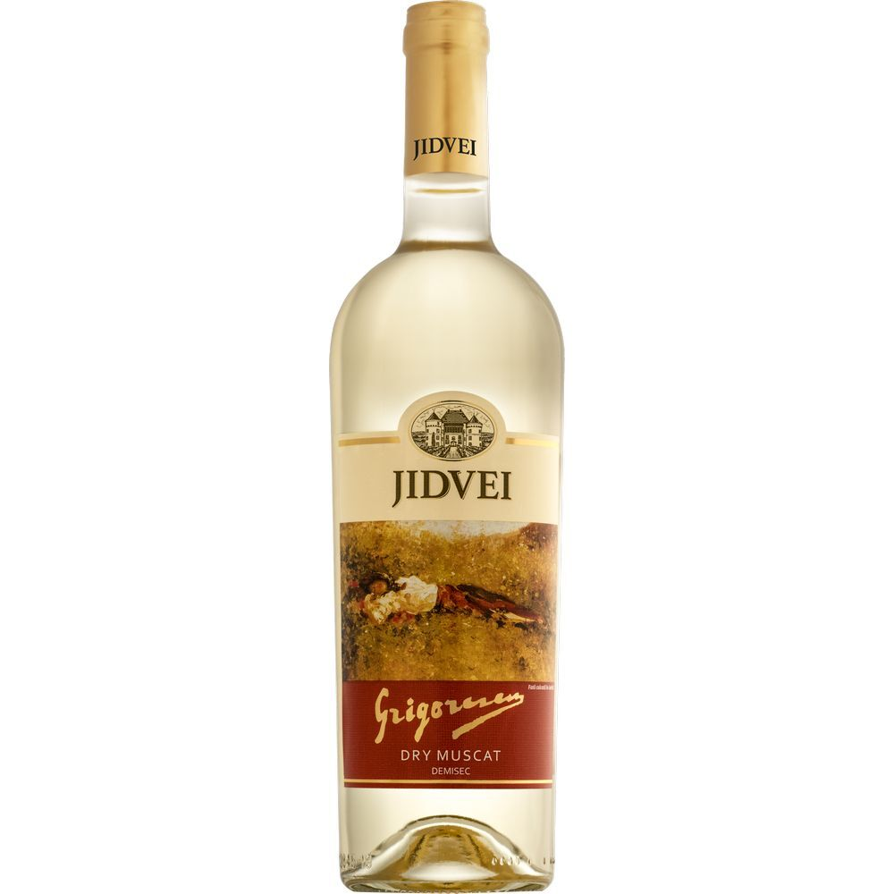
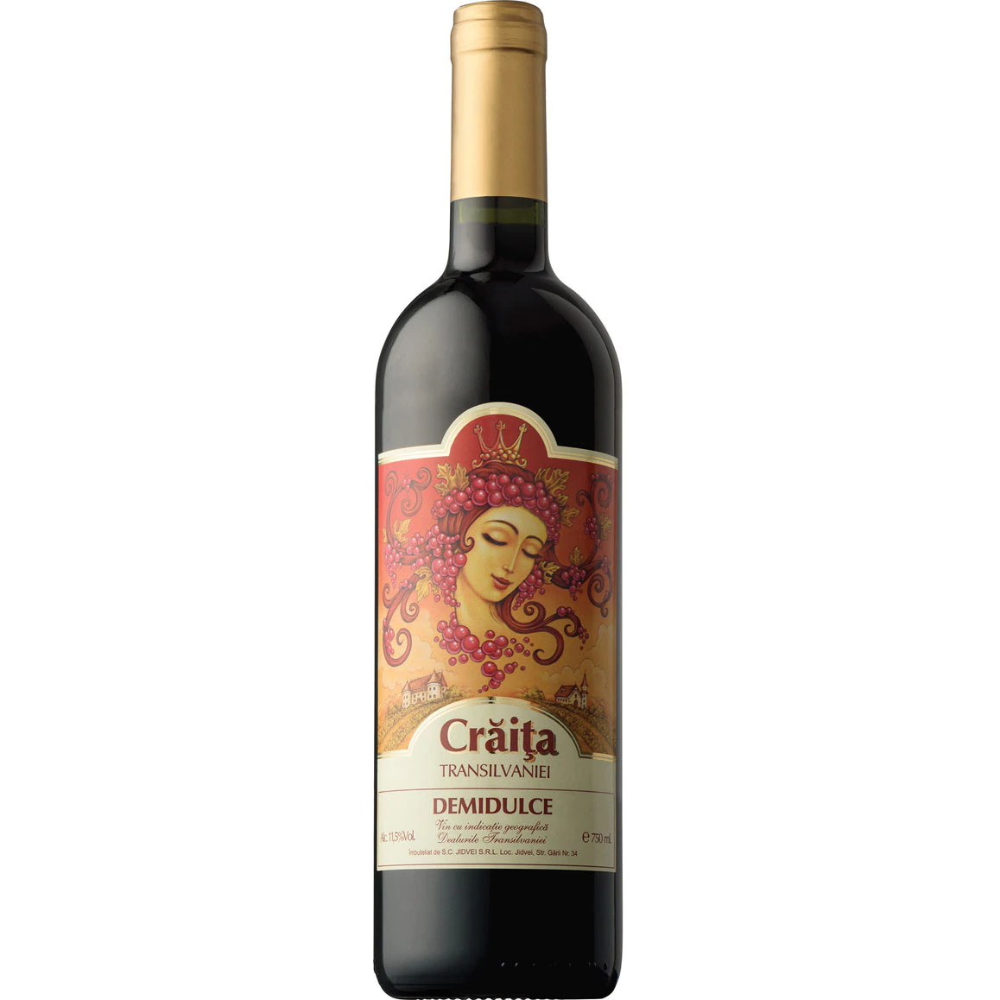
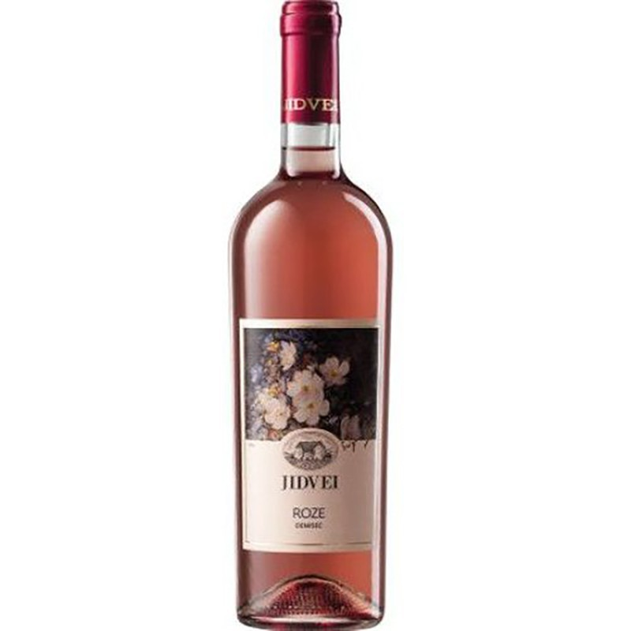

Vinul Alb

Tipuri de vin alb in functie de soiul strugurilor
Aroma unui vin alb e direct influentata de strugurii folositi in producerea lui. Calitatea strugurilor variaza in functie de fertilitatea pamantului, de climatul in care se cultiva si de o serie de alti factori importanti.
Iti povestim si descriem un pic cele mai savuroase tipuri de vin alb, in functie de soiul strugurilor:
1.Chardonnay
Numele lui provine de la strugurii din care e facut. Originar, acestia se cultiva in regiunea Burgundia din Franta, dar culturile s-au raspandit in mai multe parti ale lumii, inclusiv in Romania. Vinul alb Chardonnay are gust suav, cu aroma florala distincta si se potriveste de minute cu preparatele din peste sau fructe de mare.
2.Sauvignon Blanc
Strugurii de calitate din care e facut provin tot din Franta. Fie ca e sec, demidulce sau dulce, Sauvignon Blanc are aroma intensa si miros nostalgic de flori de vita de vie. E usor acidulat si cu gust care aminteste de pepenele galben. Cand are cativa ani de vechime in butoi de lemn de stejar, e si mai savuros.
3.Gewürztraminer
Denumirea acestui vin si a strugurilor provine de la termenul german “condimentat”. Are arome exotice, cu note picante si influente de ghimbir si scortisoara, precum si de lici. De fapt, componentele licilor sunt asemanatoare cu ale strugurilor de acest fel. Daca e servit cu o friptura de vanat salbatic sau cu branza de tip Munster, vinul alb Gewürztraminer e o delicatesa de elita. Iti recomandam sa n-o ratezi!
4.Pinot Gris
Denumirea lui vine din limba franceza: pinot inseamna con de pin si se refera la forma bobului de strugure. Acesta se dezvolta pe solul calitativ din Burgundia, Franta. Vinul alb Pinot Gris are continut redus de alcool si o varietate de arome(dintre care ies in evidenta marul verde, para si pepenele galben), formand o combinatie excelenta cu branzeturi proaspete, cu salate si deserturi ca tiramisu sau placinta cu branza.
5.Riesling
Mergem inapoi in Germania, unde a si aparut, dar si fost si mult timp ignorat. Vinul alb Riesling a fost apreciat cu adevarat in ultimul deceniu, pentru calitatile sale superioara. Nu doar ca e unul dintre cele mai aromate vinuri din lume, dar are si o paleta de gusturi exotice, in functie de cat de copt este strugurele. Gusturile lui au influente de ananas, nectarina si piersici. Se bea foarte rece, la aproximativ 6 grade si se armonizeaza cu bucataria asiatica, mai ales daca include curry, tumeric sau sos de soia.
Vinul Rosu

Tipuri de vin rosu in functie de soiul strugurilor
Este cunoscut efectul benefic al vinului roșu consumat cu moderație. Antioxidanții din vinul roșu sunt principalii responsabili de efectele benefice ale acestei băuturi. Pe termen lung și intrat în stilul de viață cotidian, vinul roșu ajută la prevenirea unor afecțiuni grave, dacă este dublat, desigur, și de alte elemente precum o alimentație echilibrată și variată și sport.
1.Pinot Noir
Din zonele mai răcoroase și ploioase – are cea mai mare concentrație de resveratrol, așadar efectele sale anti-îmbătrânire și anti-tumorale sunt și mai puternice.
2.Cabernetul, Shyraz, Merlot
Au conținut ridicat de procianide, flavonoide care ajută la menținerea vaselor de sânge sanatoase și reduc riscul unui atac de cord sau accident vascular cerebral
3.Sagratino, Cabernet Sauvignon
Vinurile cu cel mai ridicat nivel de polifenoli
Vinul Rose

Tipuri de vin rose in functie de soiul strugurilor
Se poate spune despre vinul rosé că vine ca o completare în spaţiul dintre vinul roşu şi cel alb. Însă vinul rosé are propria lui personalitate.
Acest tip de vin este obţinut atunci când cojile strugurilor roşii sunt lăsate la fermentat doar pentru o scurtă perioadă de timp alături de pulpă. Că vă faceţi o idee, vă vom spune că vinurile roşii sunt obţinute adesea după ce strugurii au fost lăsaţi să fermenteze săptămâni bune, în timp ce, în cazul vinurilor rosé, aceste capătă culoarea în numai câteva ore.
Producătorul de vin are controlul absolut asupra culorii vinului şi ştie exact când trebuie să îndepărteze cojile strugurilor roşii, responsabile cu pigmentarea. După cum cred că întuiţi deja, aproape orice sortiment de struguri roşii de vin – de la Cabernet Sauvignon la Syrah – poate fi folosit pentru a obţine vinul rosé. Totuşi, există anumite stiluri şi anumite sortimente de struguri care sunt agreate în mod deosebit pentru obţinerea acestei băuturi.
1.Provence
De regulă, un rosé mult mai sec, dar unul dintre cele mai bune. Rosé-urile Provence merg foarte bine cu fructe de mare, paste, pește și mușchi de porc. Acest vin se produce doar într-un număr restrâns de 85 de comunități aflate între Nisa și Marsilia, pe Coasta de Azur, fiind realizat din soiul Grenache.
2.Rosato italian
Este numele italienesc pentru vinul rosé, unul care are un gust divers, în funcție de regiune. Sunt multe tipuri de rosé-uri produse în Italia, fiecare cu gustul și aromele lui. De aceea, trebuie să le încerci mai întâi, pentru a vedea care dintre rosato-uri e favoritul tău.
3.Rosado spaniol
Precum rosato-ul italian, rosado e varanta spaniolă a rosé-ului și, din nou, depinde de regiune și climat. Dar cele mai bune vinuri rosé iberice provin din Navarra, acolo unde sunt produse din soiul Garnacha (sau Grenache-ul francez). Ce diferențiază rosé-urile spaniole de cele franțuzești este că acestea folosesc de multe ori soiuri diverse de struguri, precum Merlot și Tempranillo, laolaltă cu Cabernet Sauvignon și Carignan.
4.Tavel
Tavel (Franța) e o localitate recunoscută deseori drept capitala vinului rosé, având o istorie îndelungată și bogată, care se datorează și turismului, fenomen ce a făcut popular vinul de aici. Soiul de strugure folosit este același Grenache. Vinurile Tavel sunt cunoscute a fi ceva mai robuste, cu note de mirodenii și fructe de pădure.
5.Champagne
Rosé Champagne e una dintre cele mai scumpe șampanii de pe piață. Precum vinurile obișnuite, are o culoare care variază de la rozul gri la rozul aprins. Unele șampanii se colorează la final cu un Pinot Noir, pentru a li se aduce o nuanță mai sugestivă pentru dragoste și romantism, lucru blamat de unii și adulat de alții.